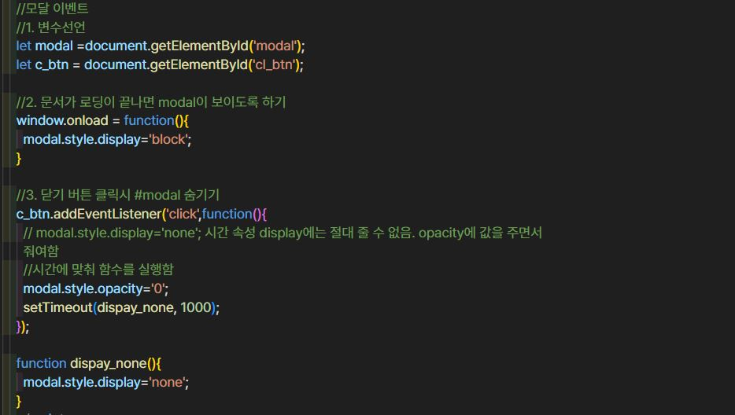

• Event : 어떠한 특별한 상황, 행사, 사건
• 웹페이지에서는 '클릭','오버','아웃','드래그','더블클릭','스크롤','키보드' 등의 행위를 했을 때 일어나는 사건을 이벤트라고 함
• onclick(); 마우스로 해당요소를 클릭 했을 때 이벤트 발생
• ondblclick(); 마우스로 해당 요소를 더블 클릭하였을 때 이벤트 발생
• onkeydown(); 키보드를 눌렀을 때 이벤트 발생
• onkeypress(); 키보드를 눌렀다가 땠을 때 이벤트 발생
• onkeyup(); 키보드를 놓았을 때 이벤트 발생
• onmousedown(); 마우스로 버튼을 눌렀을 때 이벤트 발생
• onmouseup(); 마우스로 버튼을 눌렀다가 놓았을 때 이벤트 발생
• onmouseover(); 버튼에 마우스를 올렸을 때 이벤트 발생
• onmouseout(); 버튼에 마우스를 올렸다가 떼었을 때 이벤트 발생

• 모달윈도우(modal window)는 사용자 인터페이스(UI, useer interface)디자인 개념에서
자식윈도우에서 부모 윈도우로 돌아가기 전 사용자의 상호 동작을 요구하는 창을 말함
• 모달 윈도우는 부모창을 어둡게 하고 자식 요소가 화면의 가운데 중앙에 배치하도록 하며, 오른쪽 상단에 '닫기'버튼을 만들어 닫을 수 있도록 함
